Asset Browser Library
This section is dedicated to the use of the Asset Browser version of Cyber Holograms, if you want to use the version for Extreme PBR, go to the dedicated section here: Extreme PBR Expansion
Open an Asset Browser
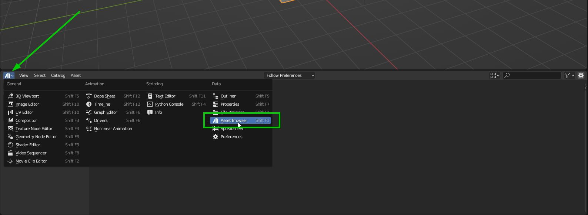{kind=link}
Select Cyber Assets from the list
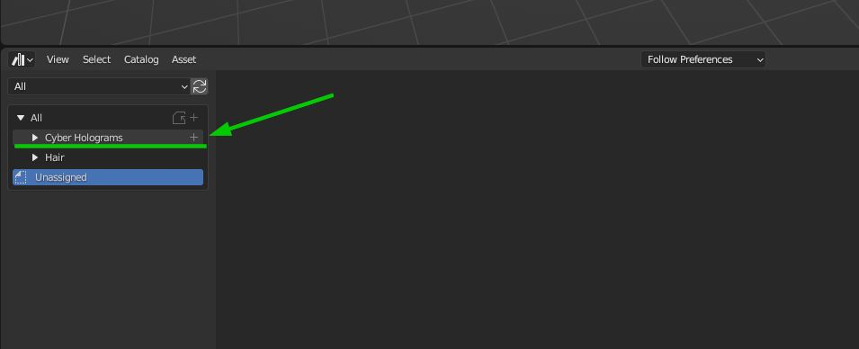{kind=link}
The library is divided into four sections: Materials Holograms, material Lights, Node groups Holograms and Node Groups Lights
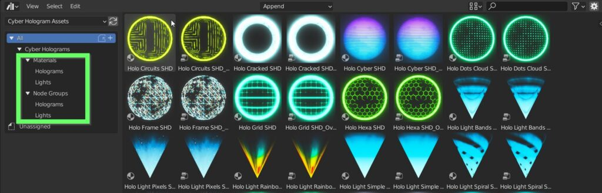{kind=link}
Apply Hologram material
Select the Materials Holograms section and simply drag and drop an Hologram material onto your model. The material active on the model will be automatically replaced with the Hologram material
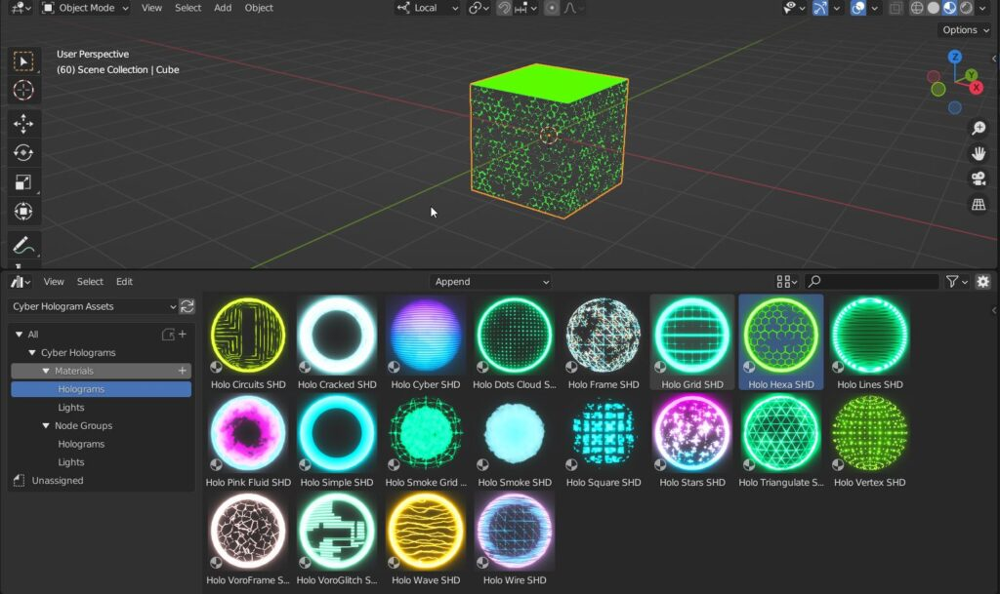{kind=link}
Edit Hologram material
Once the material has been applied you can edit its parameters like any other material, to do this, select the material and go to the “Material Properties” tab and you will find all the controls for customize the effect
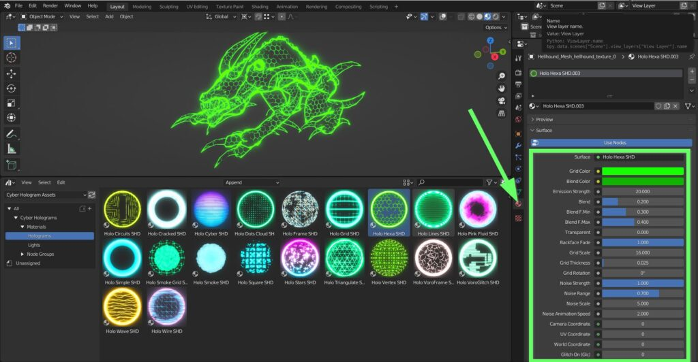{kind=link}
Color & Emission
Every material has its own parameters. In this example you can define the colors of both hexagonal grid and contour, and set the Emission strength
Note
In the Eevee render engine the material does not illuminate the scene, this is a limitation of Eevee. The material will actually illuminate the scene only in the Cycles render engine
{kind=link}
Blend Effect
Three sliders control the blend between the two colors. Set Blend F min and Blend F max values close each other in order to get a sharp transition.
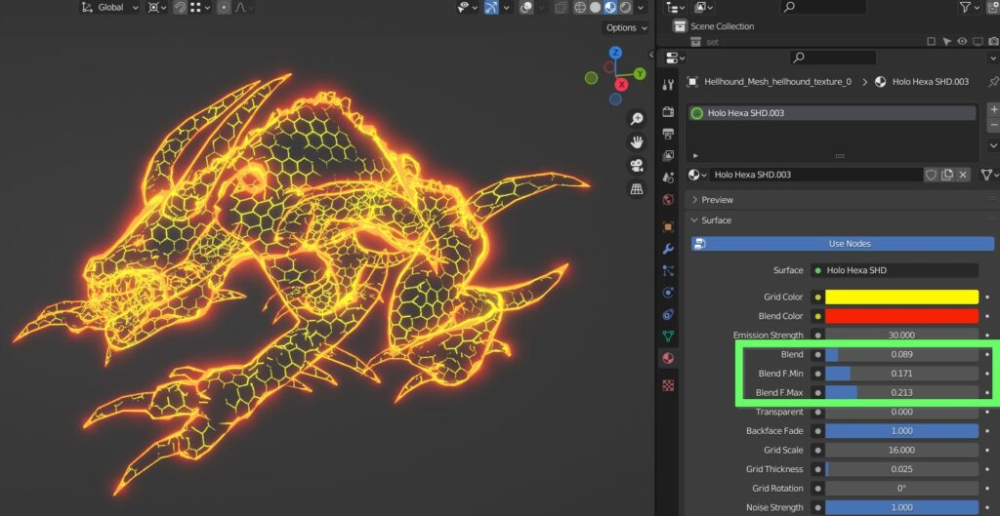{kind=link}
Transparency
You can control the transparency of the hologram material, the transparency of the backface, the scale, thickness and rotation of the grid
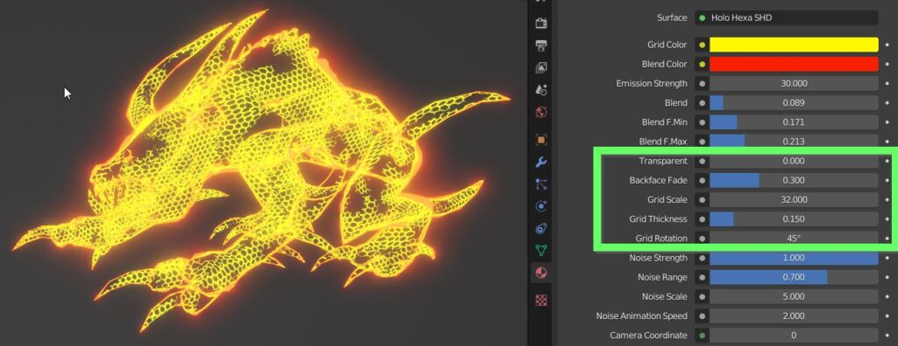{kind=link}
Noise
Note
The noise texture is animated, press play in the timeline in order to see the effect
You can define the strength of the noise animation, its range of action (proportion between affected and unaffected areas), its scale and its animation speed
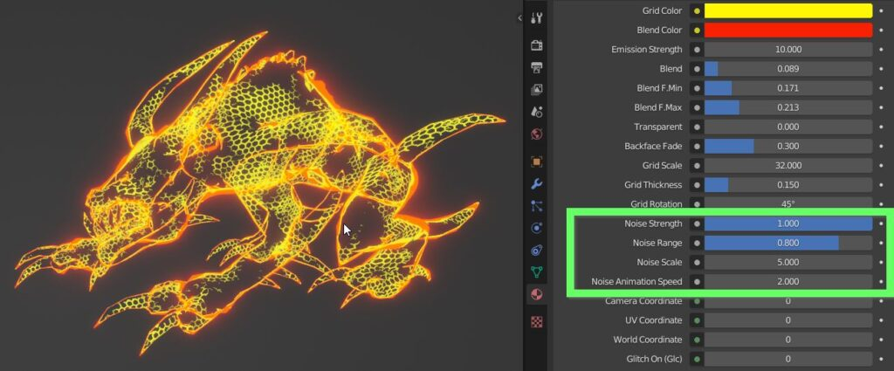{kind=link}
Change Coordinates
The material can be anchored to Camera, UV or World Coordinates, instead of default Generated Local Coordinates.

Glitch Effect
On top of the noise animation, you can activate another animation named Glitch, which consist of a serie of horizontal bands interfering with the effect
Glitch On activates the animation
Glc Speed (Full) is the base for the speed of the full glitch fx
Glc Shutting Down adds a random complete shutdown of the material
Glc OSC noise scale is a multiplier for the base speed
Glc Phase shifts in time the noise speed
Glc Bands Speed controls the speed of bands only
Glc Bands Strength sets the amount of the speed effect
Glc Bands Scale controls the scale of the bands
Glc Bands Thickness is the proportion between bands and unaffected areas
Glc Bands Distortion makes the bands less readable
Glc Random per object lets you have different appearance on different objects, lastly you can hook the bands to World Coordinates
{kind=link}
Lights
Cyber Holograms Lights work in a very similar way, simply choose an appropriate base mesh, like cones, hemispheres and the like
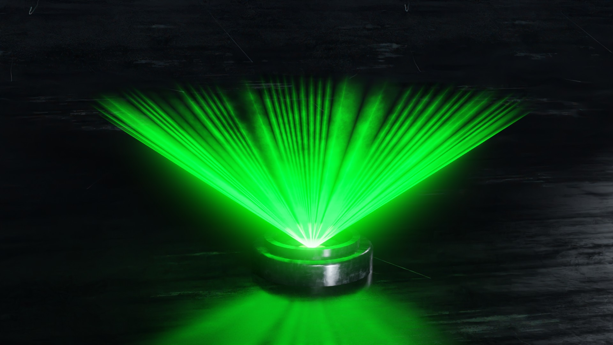{kind=link}
Hologram Nodes
Youtube Tutorial
How to use The Node Groups from Asset Browser The group nodes are used if you do not have Extreme PBR, this allows you to mix through the nodes available in the Cyber Holograms asset browser, your material to a Hologram, creating a gradient effect
Add Node Group
In this example the robot has 2 materials
Open an Asset Browser window, select the Cyber Hologram Assets library
In the example below you can see the node tree of the robot material. So you can in the next step, add a node group to create an Hologram effect
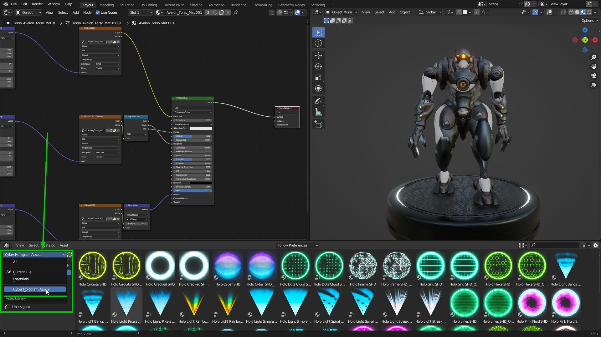{kind=link}
Add Group to Material
Expand the Node Groups category, choose Holograms, drag the Holo Hexa SHD node into the shader editor window
Assicurati di aver selezionato il modello e di essere sul materiale desiderato del modello.
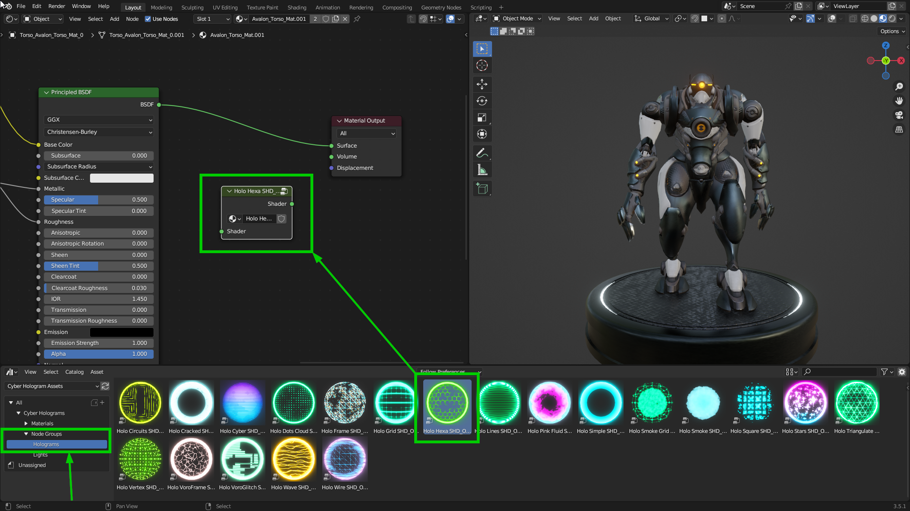{kind=link}
Connect Group to Material
Make sure to drag the hologram group node always between the Material Output node and the previous node, (In this case the Principled BSDF node)
Once dragged on the link between the two nodes, the group node will automatically connect

In this example, the robot material is different for each part of the body, so you need to add the group to all the robot materials if you want all the materials to have the hologram effect. Once done, you can modify the hologram effect through the group parameters, it will affect all the robot materials.
Edit Group Parameters
In order to edit the parameters, select the Holo Hexa node and press TAB key to show the nodes contained within it
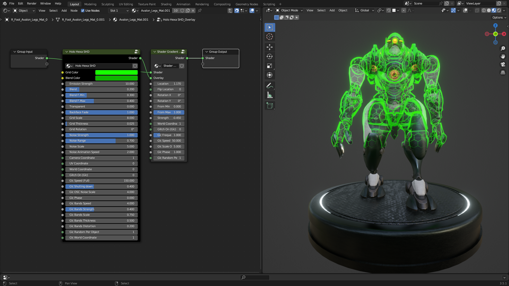{kind=link}
Set the parameters as you like, as demonstrated in the related tutorials: Youtube Tutorial The changes will affect both materials
Glitch Group
The second node, Shader Gradient Glitch, controls the parameters by which the effect is blended with the previous material It is possible to set the position of the separation line, rotate it, establish the type and quantity of blending.
Note
It is important to understand that the group node must be edited from the inside as shown, this is the only way to ensure that the changes are applied to all materials that use the group.
{kind=link}
Mix Gradient
Keeping the From Min and From Max parameters close to each other the separation will be sharp
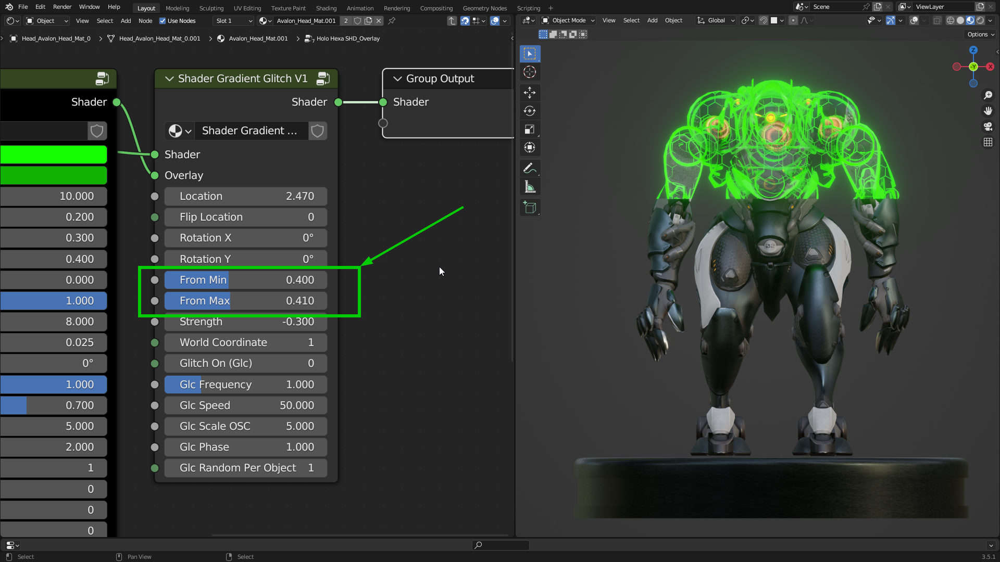{kind=link}
Strength
The Strength value is added globally to the gradient, allowing for further animatable effects
It is possible to anchor the gradient to world coordinates instead of local ones
Here too it is possible to introduce an additional glitch effect, with the usual parameters